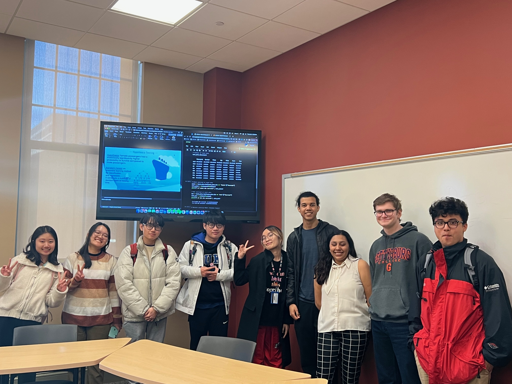

# Installing Libraries
import numpy as np # Numopy is a fundamental python library for scientific computation
import pandas as pd # Pandas provides fast data structures and data analysis tools for manipulating data in pythonData Science Presentation for Association of Computing Machinery
Description: Introductory data science presentation and project walkthrough with Gettysburg College students
The Association for Computing Machinery (ACM) in Gettysburg College is a student-led organization where students from different disciplines and fields with interest in computer science gather to learn from each other and to form a community on campus. For this week’s meeting, gave a presentation on “Into to Data Science”, demonstrating the data science and data analytics workflow, from data exploration, hypothesis testing, and modelling processes useful to answer data-driven questions. This presentation is adapted from Kaggle’s Titanic - Machine Learning from Disaster’ Machine Learning Competition.

# Loading Datasets
# Titanic survival data is divided into two datasets: Train and Test
train_data = pd.read_csv("/Users/gabrielguzman/School/Research/Data Science/titanic/train.csv")
test_data = pd.read_csv("/Users/gabrielguzman/School/Research/Data Science/titanic/train.csv")#---Exploratory Data Analysis---#
# Summary of train data
test_data.describe()| PassengerId | Survived | Pclass | Age | SibSp | Parch | Fare | |
|---|---|---|---|---|---|---|---|
| count | 891.000000 | 891.000000 | 891.000000 | 714.000000 | 891.000000 | 891.000000 | 891.000000 |
| mean | 446.000000 | 0.383838 | 2.308642 | 29.699118 | 0.523008 | 0.381594 | 32.204208 |
| std | 257.353842 | 0.486592 | 0.836071 | 14.526497 | 1.102743 | 0.806057 | 49.693429 |
| min | 1.000000 | 0.000000 | 1.000000 | 0.420000 | 0.000000 | 0.000000 | 0.000000 |
| 25% | 223.500000 | 0.000000 | 2.000000 | 20.125000 | 0.000000 | 0.000000 | 7.910400 |
| 50% | 446.000000 | 0.000000 | 3.000000 | 28.000000 | 0.000000 | 0.000000 | 14.454200 |
| 75% | 668.500000 | 1.000000 | 3.000000 | 38.000000 | 1.000000 | 0.000000 | 31.000000 |
| max | 891.000000 | 1.000000 | 3.000000 | 80.000000 | 8.000000 | 6.000000 | 512.329200 |
# Women survived in train data
women = train_data.loc[train_data.Sex == 'female']["Survived"]
rate_women = sum(women)/len(women)
print("% of women who survived:", rate_women)
# Men survived in train data
men = train_data.loc[train_data.Sex == 'male']["Survived"]
rate_men = sum(men)/len(men)
print("% of men who survived:", rate_men)% of women who survived: 0.7420382165605095
% of men who survived: 0.18890814558058924# Machine Learning Model (Randoom Forest Algorithm)
from sklearn.ensemble import RandomForestClassifier
y = train_data["Survived"]
features = ["Pclass", "Sex", "SibSp", "Parch"]
X = pd.get_dummies(train_data[features])
X_test = pd.get_dummies(test_data[features])
model = RandomForestClassifier(n_estimators=100, max_depth=5, random_state=1)
model.fit(X, y)
predictions = model.predict(X_test)
output = pd.DataFrame({'PassengerId': test_data.PassengerId, 'Survived': predictions, 'Sex': test_data.Sex})
output.to_csv('submission.csv', index=False)# Female survived = 0.910828025
# Male survived = 0.010398614
# % of women who survived: 0.7420382165605095
# % of men who survived: 0.18890814558058924